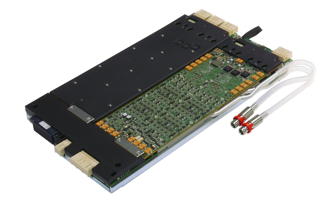

DC Scale AVI64 card
The AVI64 is a general purpose V/I card that features analog and high-voltage digital capabilities and is optimized for providing a true universal analog pin, covering a wide range of test application needs. The card belongs to the DC Scale family and can reside in any channel card slot.
| Supported V93000 systems : EXA Scale (SmarTest 8), Smart Scale (SmarTest 7+8) |

Electrical design rules
Some specific electrical design rules must be considered for the DC Scale AVI64 card to ensure that the specifications for the card and the maximum ratings for the pogo pins can be met. The following topics describe the AVI64 pins and provide some design rules.
For specification data of the pins, refer to table "Interface characteristics" in AVI64 other specifications.
There are no specific design rules for the DUT interface of the Twinning solution.
Power budget
The AVI64 card comprises limited power budgets. To prevent any likelihood of an overpower shutdown, SmarTest limits the overall power usage of an AVI64 card. Warning flags are set (SmarTest 7) or alarms are generated (SmarTest 8) in case the utilization of a power budget reaches a critical level. An error message is issued and the involved channel or channels are disconnected if a power budget is exceeded. The programmed force or clamp current and the programmed voltage range are used to calculate the utilization of the available power budgets.
Assigning pins (SmarTest 7) or signals (SmarTest 8) to channels of AVI64 cards in the Pin setting editors of SmarTest 7 or in the DUT board description of SmarTest 8 needs therefore your attention regarding the available power budget per card. This applies to all supported AVI64 operating modes. Refer to AVI64 power budget for more information.
HV (High-Voltage) protection
The AVI64 card may be connected to low-voltage cards via defective DUTs or unintentionally closed connections. The card provides enough energy to damage the low-voltage cards in this case. Therefore, we recommend that you implement a HV (High-Voltage) protection circuitry on your DUT boards to protect the low-voltage cards. This will improve the uptime of the test system and the throughput of high-voltage applications.
Additional protection circuitry is required on the DUT board if AVI64 channels are operated together with other cards that can exceed the compliance range of the AVI64.
Other cards that may exceed the limits for the AVI64 channels are for example DC Scale PVI8 cards if the PVI8 channels are stacked.
For more information refer to Overload protection and HV protection - Compliance range.
Functional changes
- Introduced in SmarTest 7.4.0 / 8.1.0